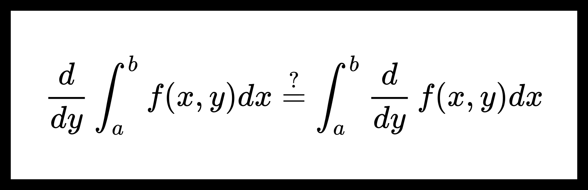

Дифференцирование собственных интегралов с параметрами.
Теорема. О дифференцировании собственных интегралов с параметрами.
Пусть дана функция f(x,y):[a,b]×[c,d]→R. Также пусть выполнено следующее:
-
Существует производная fy′(x,y), непрерывная в прямоугольнике [a,b]×[c,d];
-
∀y∈[c,d] функция f(x,y) непрерывна по x на интервале [a,b].
Тогда для F(y)=∫abf(x,y)dx верно, что
∀y∈[c,d] ∃F′(y)=∫abfy′(x,y)dx.
Доказательство:
Пусть y0∈[c,d]. Покажем, что ∃F′(y0)=∫abfy′(x,y0)dx.
F′(y0)=h→0limhF(y0+h)−F(y0)=h→0lim∫abhf(x,y0+h)−f(x,y0)dx=?
=?∫abh→0limhf(x,y0+h)−f(x,y0)dx=∫abfy′(x,y0)dx
Докажем равенство =? используя теорему о предельном переходе под знаком собственного интеграла. Для этого нужно показать, что
hf(x,y0+h)−f(x,y0) h→0⇉x∈[a,b]fy′(x,y0).
По теореме Кантора о равномерной непрерывности в силу непрерывности fy′ на [a,b]×[c,d] верно следующее:
∀ε>0 ∃δ>0 ∀x1,x2∈[a,b] ∀y1,y2∈[c,d]
∣x1−x2∣<δ, ∣y1−y2∣<δ ⇒ ∣fy′(x1,y1)−fy′(x2,y2)∣<ε.
Пусть x1=x2=x, a y1=y0+h и y2=y0.
По формуле Лагранжа найдется θ∈(0,1), что
fy′(x,y0+θh)=hf(x,y0+h)−f(x,y0).
Получим
∣h∣<δ ⇒ ∣θh∣<δ ⇒ ∣hf(x,y0+h)−f(x,y0)−fy′(x,y0)∣<ε.
Cумируем:
∀ε>0 ∃δ>0 ∀x∈[a,b] ∀h
∣h∣<δ ⇒ ∣hf(x,y0+h)−f(x,y0)−fy′(x,y0)∣<ε.
Получим, что
hf(x,y0+h)−f(x,y0) h→0⇉x∈[a,b]fy′(x,y0).
Что завершает доказательство.